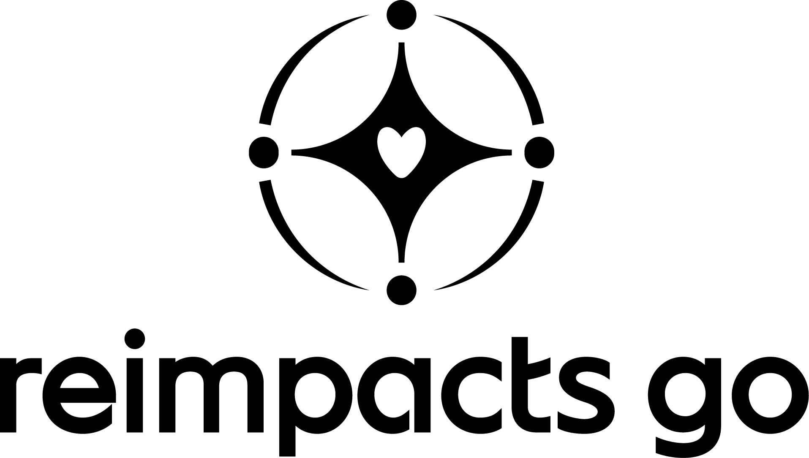

<!-- Estilos para la barra de navegación -->
<style>
    nav {
        /* Color de fondo principal (Azul Claro) */
        background-color: #ACC9FC;
        /* Aumentado el padding horizontal para más espacio en los lados */
        padding: 10px 40px;
        display: flex;
        align-items: center;
        font-family: sans-serif; /* Se recomienda añadir una fuente base */
    }
    nav ul {
        list-style: none;
        margin: 0;
        padding: 0;
        width: 100%;
        display: flex;
        align-items: center;
    }
    /* Estilo para el logo */
    .logo {
        height: 40px; /* Ajusta la altura de tu logo */
        margin-right: 20px; /* Espacio entre el logo y los enlaces */
    }
    nav ul li a {
        /* Color del texto de los enlaces (Azul Oscuro para contraste) */
        color: #1D1D1B;
        text-decoration: none;
        padding: 10px 15px;
        display: block;
        border-radius: 5px;
        transition: background-color 0.3s, color 0.3s;
        font-weight: bold;
    }
    nav ul li a:hover {
        /* Color de fondo al pasar el cursor (Azul Oscuro) */
        background-color: #1D1D1B;
        /* Color del texto al pasar el cursor (Blanco Hueso) */
        color: #F7F7F7;
    }

    /* --- NUEVO: Espaciador para centrar los enlaces --- */
    .nav-spacer {
        flex-grow: 1; /* Este elemento crecerá para ocupar el espacio disponible */
    }

    .profile-link-container {
        margin-left: auto; 
        position: relative;
        /* Eliminado el padding-right para que el ajuste sea simétrico */
    }
    .profile-icon {
        display: block;
        width: 40px;
        height: 40px;
        border-radius: 50%;
        overflow: hidden;
        transition: transform 0.2s ease;
        background-color: transparent;
    }
    .profile-icon:hover {
        transform: scale(1.1); 
    }
    .profile-icon img {
        width: 100%;
        height: 100%;
        object-fit: cover; 
    }
    .tooltip {
        position: absolute;
        bottom: -45px;
        left: 50%;
        transform: translateX(-50%);
        background-color: #1D1D1B;
        color: #F7F7F7;
        padding: 5px 10px;
        border-radius: 5px;
        font-size: 12px;
        white-space: nowrap;
        visibility: hidden;
        opacity: 0;
        transition: opacity 0.3s, visibility 0.3s;
        z-index: 10;
    }
    .profile-link-container:hover .tooltip {
        visibility: visible;
        opacity: 1;
    }
</style>

<!-- Contenido del menú -->
<nav>
    <ul>
        <!-- Logo -->
        <li>
            <a href="index.html">
                
            </a>
        </li>

        <!-- Espaciador para empujar los enlaces al centro -->
        <li class="nav-spacer"></li>

        <!-- Enlaces de Navegación -->
        <li><a href="index.html">Inicio</a></li>
        <li><a href="crear_vol.html">Crear voluntariados</a></li>
        <li><a href="Inscrip.html">Inscribirse</a></li>
        <li><a href="Blogs.html">Comunidades</a></li>
        <li><a href="menu_act.html">Actividades</a></li>
        <li><a href="conocenos.html">Nuestro equipo</a></li>

        <!-- Espaciador para empujar los enlaces al centro -->
        <li class="nav-spacer"></li>
        
        <!-- Ícono de Perfil -->
        <li class="profile-link-container">
            <a href="perfil.html" class="profile-icon" title="Perfil de usuario">
                
                <span class="tooltip">Perfil de usuario</span>
            </a>
        </li>
    </ul>
</nav>